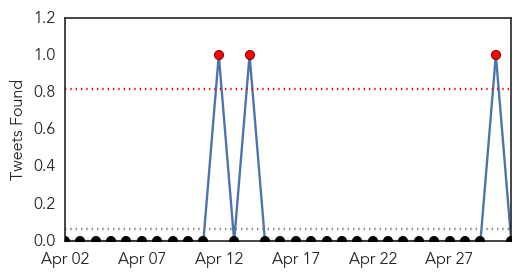

30 Day Trends
Web: 1 alerts, 0 warnings
Twitter: 1 alerts, 0 warnings
Top Articles:
- 0.995
- Bird flu epidemic becoming critical…(If This Jumps To The Swine…Off To The Races!!)
- 0.976
- Make extra effort to avoid spreading flu next year
- 0.930
- Bird flu outbreak could set U.S. record with 'probable' cases in Iowa
- 0.886
- Bird flu outbreak could set U.S. record with 'probable' cases in Iowa
- 0.859
- Bird flu outbreak could set U.S. record with ‘probable’ cases in Iowa
- 0.834
- Iowa Sick Birds Prompts Governor to Declare State of Emergency
- 0.773
- Iowa governor declares state of emergency due to bird flu outbreak
- 0.772
- Iowa declares state of emergency to fight bird flu 'epidemic'
- 0.751
- May 1, 2015 Archives
- 0.751
- April 30, 2015 Archives
- 0.751
- April 30, 2015 Archives
- 0.751
- April 30, 2015 Archives
- 0.751
- April 30, 2015 Archives
- 0.628
- Dog flu outbreaks temporarily close shelters, suspend adoptions
- 0.587
- Government of Canada announces funding to enhance influenza vaccine research and development - News Press Release
- 0.555
- Government of Canada announces funding to enhance influenza vaccine research and development
- 0.519
- Poultry industry on alert for bird flu
Top Tweets:
-
No tweets found for May 01, 2015
Web/News Articles

Tweets
Article Locations